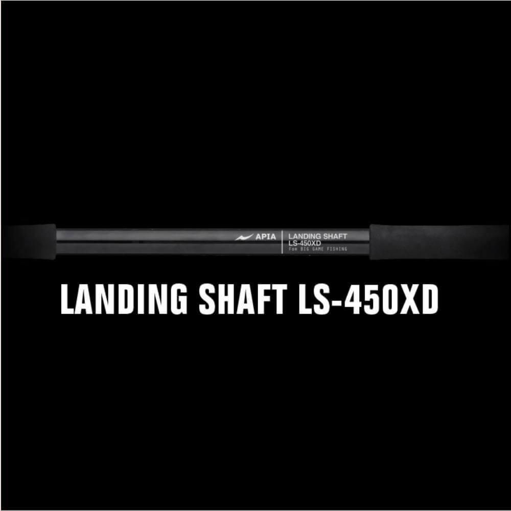

ランディングシャフト LS-450XD
（LANDING SHAFT LS-450XD）
ランディングシャフト LS-450XD（LANDING SHAFT LS-450XD）はAPIA（アピア）のランディングシャフト（タモの柄）です。
ブリやヒラマサ、クエやマグロまでを想定した小継振出式のモデルで、固定式ギャフや大口径ネットで重さが掛かっても固着しにくい内部機構が大きな特徴です。

画像出典:海吉 UMIKITI
スペック
- メーカー
- APIA（アピア）
- タイプ
- ランディングシャフト（小継振出式）
- 全長
- 4.5m
- 仕舞寸法
- 162.5cm
- 自重
- 756g
- 先径／元径
- 19.3mm／27.5mm
- 価格
- 36,080円（税込・販売店の通常価格）
▼今すぐチェック
ランディングシャフト LS-450XDの特徴
大物の取り込みを支える、高剛性の小継振出式シャフト
-
固着を防ぐ内部機構
固定式ギャフや大口径ネットでのランディングで相当な重量が掛かった時でも、固着を防ぐ内部機構を搭載している。振り出しやすくする減圧防止穴も付いている。
-
ランディングツールが抜けにくいピン留め
取り込み用具の装着部は貫通ピン留め加工。ギャフやネットなどの脱落を防いでいる。
-
ギャフにも使える高剛性
小継タイプながら剛性と強度が高く、ギャフのシャフトとしても使える。塗膜より硬く吸湿しないブランク保護テープを全節に使っている。
ランディングシャフト LS-450XDの使い方
ネットやギャフを先端に取り付け、足場の高さに合わせて伸ばして使います。小継振出式で、ロック機構は付いていません。
継ぎをしっかり伸ばして固定してから魚を迎えると安定します。使い終わったら塩分を洗い流してから乾かし、固着や腐食を防ぎましょう。
ランディングシャフト LS-450XDがおすすめの人
堤防や磯で、ブリ・ヒラマサなどの大型魚を狙う人に向いたランディングシャフトです。
4.5mで足りる足場の高さなら、小継タイプで最後の取り込みまで任せられます。
釣れた大物を足元で確実に取り込むための備えとして用意したい1本です。
ワンポイント
固定ギャフとして使う場合は10kgまでが目安です。それ以上の魚を想定するなら、より強度を重視した装備も検討しましょう。
強さと引き換えに少し重いという声もあるので、軽さを優先するならアピアの軽量モデルと比べてみてください。
アピアのランディングシャフトの使い分け
| モデル | 全長／自重 | 特徴 |
|---|---|---|
| LS-450XD | 4.5m／756g | 小継振出式・仕舞162.5cm。ギャフ兼用の高剛性（本記事のモデル） |
| THE GRAND SHAFT 450 | 4.5m／804g | 3本継・カーボン95%。大型魚向けの高強度・高剛性 |
| THE SHAFT 450 | 4.5m／367g | 8本継・仕舞65.5cm・T1100G搭載。軽量で港湾〜堤防に |
| THE SHAFT 550 | 5.5m／481g | 10本継・仕舞65cm。足場の高い堤防に |
大物の取り込みを優先するならLS-450XDやTHE GRAND SHAFT 450、軽さと携帯性を重視するならTHE SHAFTと、狙う魚と釣り場で選び分けましょう。
▼今すぐチェック
あわせてチェックしたいアイテム
-
 ザ・グランドシャフト450
アピア
詳細はこちら＞
ザ・グランドシャフト450
アピア
詳細はこちら＞
全長4.5m・自重804gの高強度シャフト。さらに強度を求める人に。
-
 ヘキサネットXL
メジャークラフト
詳細はこちら＞
ヘキサネットXL
メジャークラフト
詳細はこちら＞
H80cm×W63cmのメータークラス対応ネット。大物用のシャフトと組み合わせたい。
-
 ガネット
アピア
詳細はこちら＞
ガネット
アピア
詳細はこちら＞
磯や堤防で大物を狙うならあわせて揃えたいフローティングベスト。